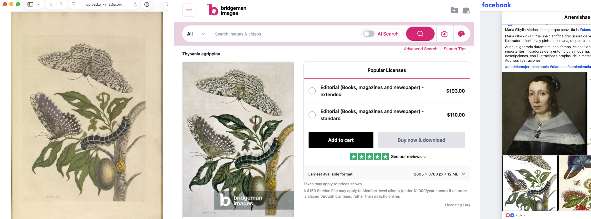
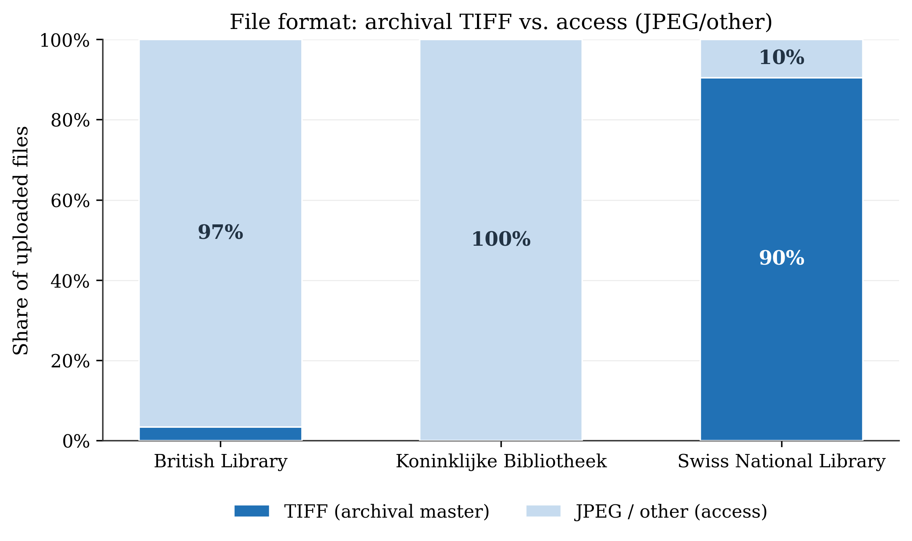
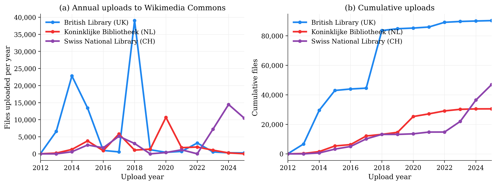
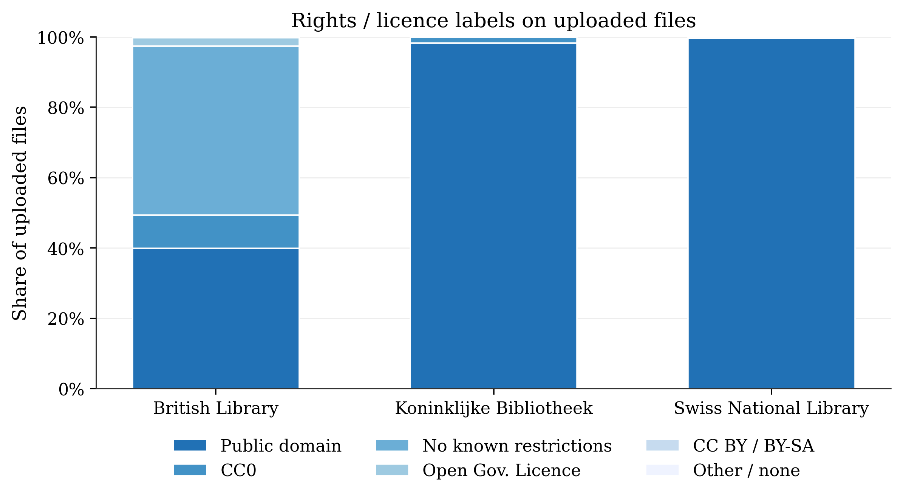
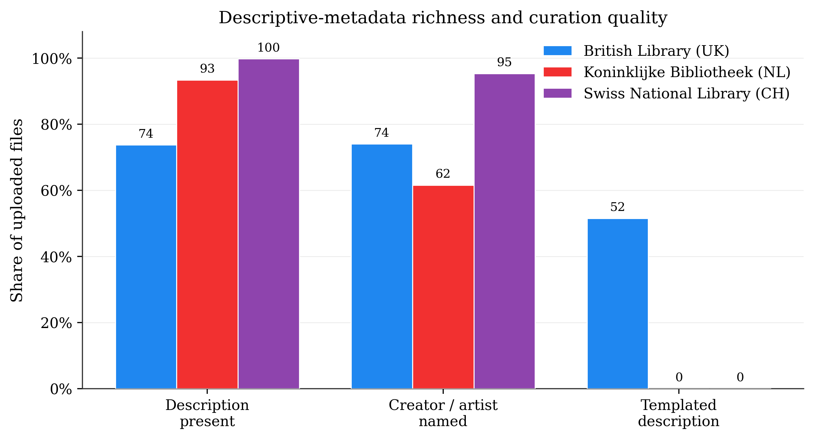

Three national libraries have each uploaded tens of thousands of public-domain images to Wikimedia Commons. We built two large, original datasets on the same images to ask three questions in turn: what gets opened, where it travels, and what generative AI does to its value.
What's opened
Provision · upload strategies
Where it travels
Diffusion · 173k reuses
Value in the AI era
Stock or prompt
What we study
The same heritage image can be given away for free on Wikimedia, sold as a stock photo for a licence fee, and reused on social media — all at once. We follow each uploaded image across the open web to see where it goes and what it is worth.

Open by Design — putting it online is itself a strategy
From the outside, uploading public-domain images looks like one good deed. Look at what each library actually uploaded — the format, the rights labels, the metadata, the timing — and three very different strategies appear.




British Library
Decentralised mass-release — huge volume, ambiguous rights, 52 % templated metadata.
Koninklijke Bibliotheek
Curator-led — steady, clean public domain, its oldest holdings.
Swiss National Library
Centralised uploads; metadata taken straight from the archive database — high-res TIFF masters, multilingual, 95 % attributed.
From Digitization to Diffusion — where open heritage travels
We followed 15,000 library images out into the wild and found them again 173,000 times — on stock sites, in news stories, on Wikipedia, on social media, across dozens of countries. Roughly two in three images were reused at least once.
Colour intensity = detected reuses in that country. Reuse is strongly European-centred; the Swiss National Library peaks at home, the KB in the Netherlands, while the British Library reaches furthest into English-speaking countries. Excludes an aggregated “European Union” label.
What drives reuse (image-level analysis)
Direction from the image-level analysis; bar widths indicate relative strength, not exact odds. Only “years online” is quantified precisely.
What is this open heritage worth?
Most detected reuses are commercial — the image reappears on a stock-photo or resale site that shows a price. Those are the reuses that would otherwise have paid a licence fee. Pick a reuse channel to see how each behaves, then value the commercial reuses at a Getty-style licence price.
The paper benchmarks commercial reuse against a standard Getty Images licence — USD 150 (low-resolution) to 350 (high-resolution). At those prices the three collections represent a modelled $181m–$423m in avoided licensing cost — an explicit lower bound, since it excludes all non-commercial, educational and AI-training value.